| |
Top 10 Defunct Coasters
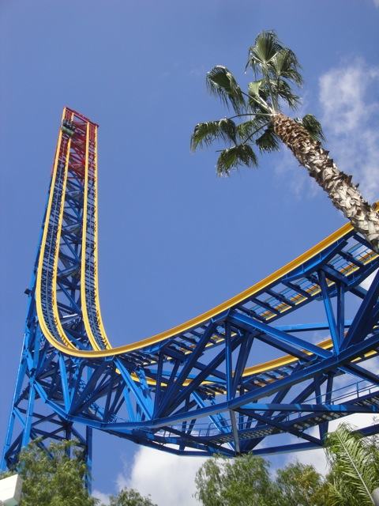
Welcome to an Incrediblecoasters Top 10 List. When we list stuff, we actually explain why. Defunct Coasters. *Sigh* Unfortunately, not everything lasts forever. And that goes for roller coasters too. Eventually, at some point, every roller coaster will eventually, one day, close. And sure, often times, the roller coasters that do wind up closing turn out to be old crappy coasters that were relics of the past that have been outdated by far better, more modern coasters that really improved on the design and just make for a far better experience that rightfully take the place of old crappy coasters. For instance, out of all the coasters on my Top 10 Worst Coasters List, 4 of the 10 coasters on that list are now defunct (Good riddance to Mean Streak, T3, Flashback, and Dragon. May all of those rides burn in roller coaster hell). 40% of all the coasters on the Top 10 Worst Coasters list are now defunct, because the parks can tell that those rides suck, and would like to replace them with much better coasters that guests would enjoy far more. And not only were those awful rides taken out, but many were replaced by something MUCH better. Like Mean Streak being replaced with Steel Vengeance, which considering that's one of our favorite coasters, to say that that was an improvement and the right call is one of the biggest understatements of the century.
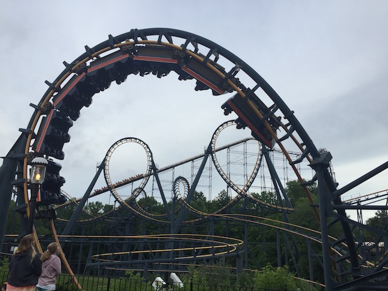 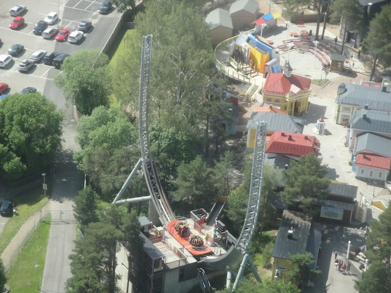
However, that's not always the case. And when I say that EVERY coaster will eventually go defunct someday, I mean that. And that's not just some far-off distant threat. No, we have already lost some amazing and fantastic coasters that I am very sad to admit, are officially either firewood or scrap metal. Now that's always been the case. There have been several coasters that were far from my favorite and rides that I enjoyed, but sort of ignored in life. But now that they're gone, you realize how fun they were and how much you miss them now that you no longer have the ability to ride them, and have a fond memory of them. But at the same time, you can live without them. There were a lot of those rides. But that's not what I want to focus on. What I want to focus on this ride are the defunct coasters that were really strong and are genuinely missed and deserve a digital plaque and obituary on Incrediblecoasters. Fun fact. This Top 10 List has been an idea of mine for so many years. However, I had never made this list because....up until recently, there weren't a ton of coasters I had ridden that were both defunct and worthy of an Incrediblecoasters obituary. And I didn't want to write these for some meh coasters. Unfortunately, these past years, so many good coasters have been dropping like flies, making this list a big priority. Hell, I initially wanted to make this list a couple years ago, but was distracted by rebuilding Incrediblecoasters and then playing catch-up for so long, always held back by dumb adult responsibilities and bullsh*t like that (Happy to report that I'm FINALLY caught up). And in that time, more coasters died, forcing a couple cool coasters that were supposed to get obituaries off the list (and losing several more cool coasters that I'm sad are just now dead). But before we begin, a couple rules for what qualifies as being able to make it on the Incrediblecoasters Top 10 Defunct Coasters List.
#1. I have to have ridden it. If I never got to ride it, it's automatically disqualified since.....I never rode it. And sadly, will never ride it since.....it's now dead. So if you're thinking "Hey! Where's "AMAZING DEFUNCT COASTER X"!? Why isn't that on the list? Chances are it's because I never got to ride it, and as such, am unable to give it a proper review and obituary. If you want to see a list of coasters I'm sad that I never got to ride and really wish I did, here's a quick list to showcase that (People upset that your favorite defunct coaster is missing from this list, check here to see if it's disqualified for me never getting the chance to ride it).
TOP 10 COASTERS I NEVER RODE, BUT REALLY WISH I WAS ABLE TO RIDE BEFORE THEY DIED
#10, #9, #8, #7, #6, #5, #4, #3, #2, #1.
#2. It has to actually be dead. Just having it moved out of its former home and to a new home DOES NOT count as a defunct coaster. That just makes it a relocated coaster. And relocated coasters can still be ridden. Yes, if a coaster is cloned, but the original one is demolished, that does count because they're seperate coasters, whereas relocated coasters are NOT. Granted, if a coaster get relocated, but then later on gets demolished from its new home, then it's fair game since the coaster is officially dead, even if it did spend more years of its life at a home you never got to ride it at.
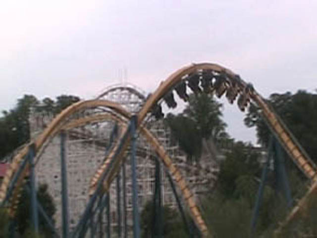 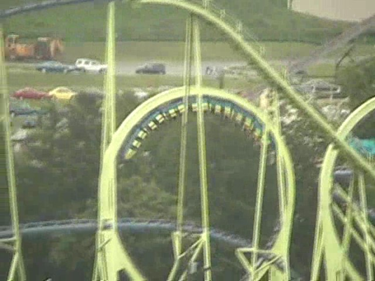
#3. Makeovers and ride adjustments DO NOT count. If a ride gets a retheme or an upgrade, such as turning X into X2, that DOES NOT make X a defunct coaster. And while that may be an easy example since almost nobody considers X and X2 to be seperate coasters. But it also applies to the more noticable adjustments. For instance, any stand up coaster that was converted into a floorless coaster, the stand up iteration of that ride is NOT a defunct coaster. Sorry, but Mantis is officially disqualified from this list. On top of that, if a new element is added or removed from a coaster, such as Son of Beast getting its loop removed, that does NOT make Son of Beast with the loop a defunct coaster (Son of Beast is a defunct coaster. But will not be on this list since it was an awful ride). And likewise, Top Thrill Dragster being turned into Top Thrill 2 does NOT make Top Thrill Dragster a defunct coaster, Yeah. If the changes are drastic enough, then I will count it, such as Steel Phantom being modified into Phantom's Revenge, or ANY RMC rennovation. But you can generally tell depending on if its a new credit or not.
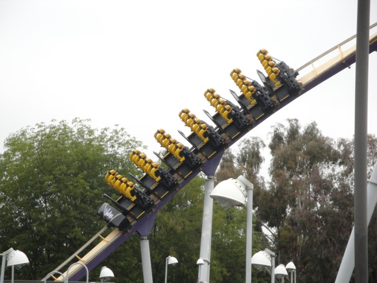 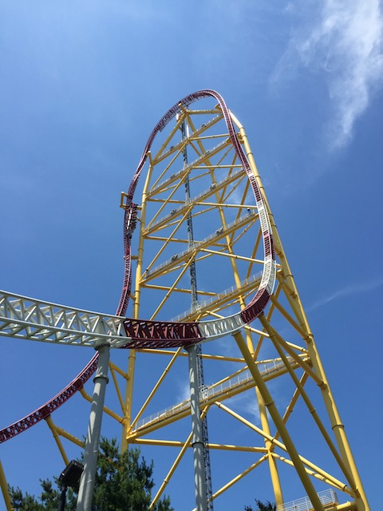
#10.
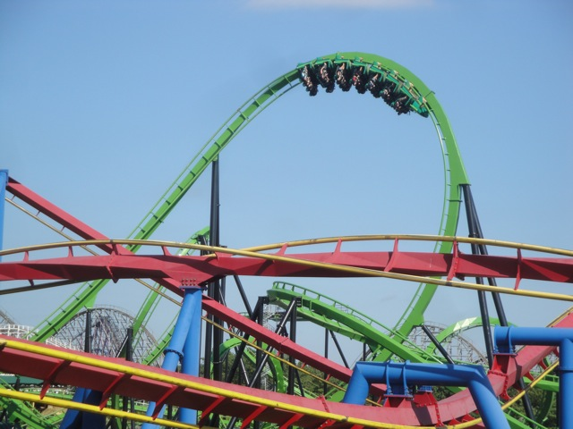
Green Lantern @
Six Flags Great Adventure
Jackson, New Jersey, U.S.A
This is a bit of a sad entry on this list for a handful of reasons. First of all, this coaster never got a proper sendoff. It was part of the big roller coaster genocide that occured when Cedar Fair and Six Flags merged and they just started not only closing a ton of rides, but even doing so without ANY warning or giving off ANY farewells. And this was particuarly bad at Six Flags Great Adventure, where they not only closed Green Lantern, but another certain coaster that'll be shown down below. Second of all, it's a B&M, and....there aren't a ton of defunct B&Ms, though that is starting to change. And finally, Green Lantern was just a really fun coaster. Sure, it wasn't the best of its kind by any means. Both Riddlers Revenge and Georgia Scorcher are both much better. But it still is a really fun ride, basically being the missing link between Mantis and Riddlers Revenge (being far closer to Mantis). It still had some good speed, fun inversions, and was just a fun ride. If you're baffled as to why I liked this and why I don't rank it on par with Gouderix, frankly that comparison is f*cking NUTS with this ride, while not the best, CURBSTOMPING Gouderix. It's because these people that it also is on our Top 10 Underrated Coasters list. Not to mention, stand up coasters in general are underrated and this was one of the better ones. Very sad that this was the first B&M Stand Up to go. May Green Lantern rest in piece.
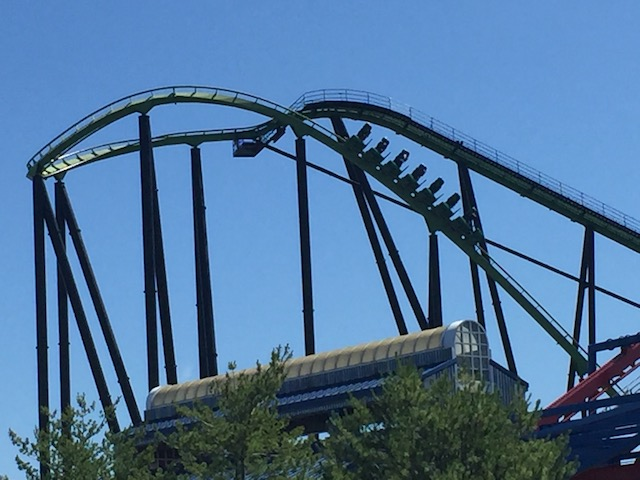 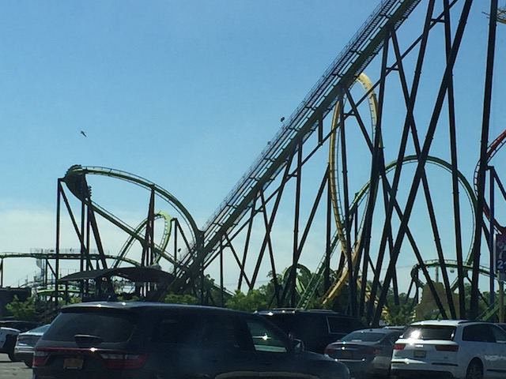
#9.
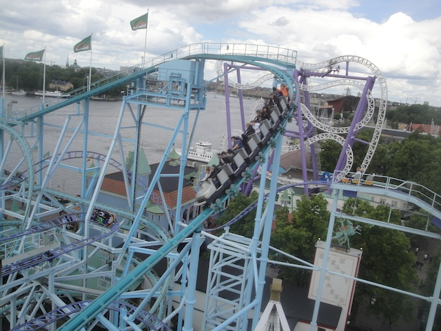
Jetline @
Gröna Lund
Stockholm, Södermanland, Sweden
Now this may not be my favorite coaster by any means, but this truly is a sad coaster to lose. Jetline is an old-school classic Schwarzkoph coaster, and those are a ton of fun. Schwarzkophs are just a really fun type of ride. And this is a total classic one. Sure, it's not one of the more truly insane ones with all those brutal inversions. But this one is just a total classic fun ride. It was a big classic twisted mess of track. Yeah. I know that was to be expected since....it was in Gröna Lund, a park where all the rides are built on top of each other, much like an RCT scenario. But even without it, this ride just weaves in and out of itself. One really notable thing this ride had was a spiral drop right in the middle of the ride that just bucked you around as you dove to the ground. Just a super fun element that really made this ride stand out from being a pretty mess of track that's fun, but nothing special, to a ride that really has a stand out moment. It unironically stands a chance of making a Top 10 Drops List. It was that good. There was a point in time where you didn't have to sweat about missing this ride as it had an......almost clone, of this ride standing. Initially in Japan, and then in the U.K. Unfortunately, the clone is also dead, dying 11 years before Jetline. So now both of these really fun rides are dead. I really hope more fun rides similar to the old school Schwarzkophs can be built. Oh well. Check out the Schwarzkophs that still exist, and Gröna Lund is still an amazing park worth checking out when in Stockholm.
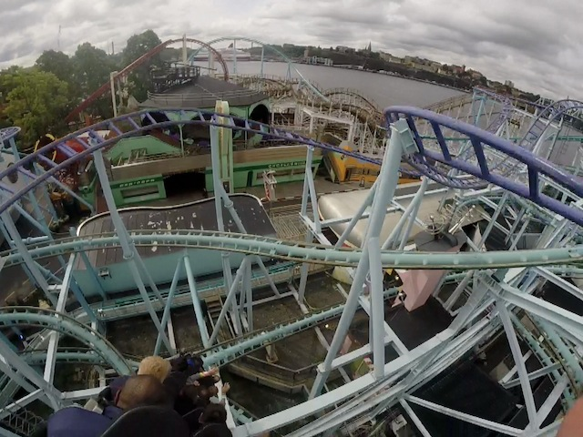 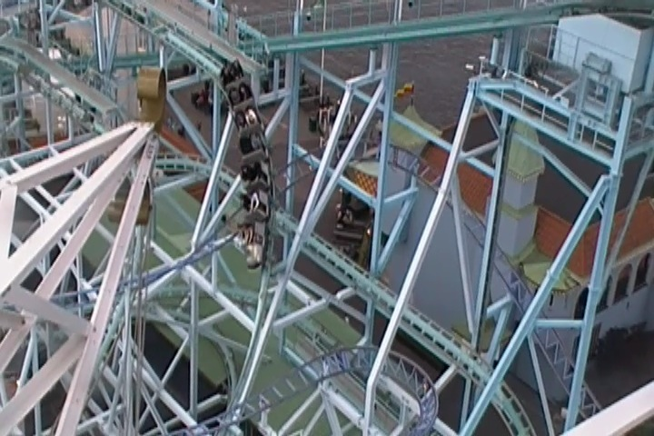
#8.
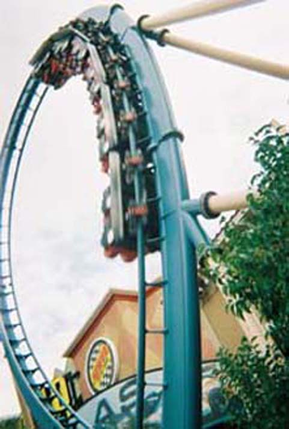
Speed the Ride @
Nascar Cafe
Las Vegas, Nevada, U.S.A
Looking back at all the old school Premier coasters, much of them have gotten love and praise. But the one that has been forgotten and ignored would be Speed the Ride (Oops. Never mind. The most forgotten Premier coaster would be this Poltergeist clone in China). But putting that aside, this was the Premier coaster that got away and was the most ignored. It also is oddly enough, one of the most unique coasters they've done (at least most unique old-school Premier coaster). Since.....all their other coasters seem to be either Poltergeist, Mr. Freeze, or a freaking Sky Rocket. Only other unique Premier coasters seem to be Full Throttle, West Coast Racers, and Ice Breaker. And I'm not gonna lie. I do prefer both the Mr. Freeze models as well as the Poltergeist models. This one, despite its name, starts out kind of slow with a weak launch and a loop of hangtime. But don't worry. A second launch kicks us off with the title of the ride, Speed. Now this ride mets its demise due to.....the Sahara closing, and then reopening, and its weird history. The Nascar Cafe closed when the hotel initially closed. It was supposed to reopen at another place in Las Vegas called Akita Plaza, which was meant to be a little shopping center in the Strip across from Mandalay Bay. It's still rotting in storage there. The project seems to be delayed indefinately. And considering that part of Speed was been sold for scrap metal, that's enough for me to officially declare the ride dead and that it'll never be rebuilt (though I'd love to be wrong). So if you're in Las Vegas.....well, go check out El Loco at the Adventuredome. That's fun and still around.
#7.
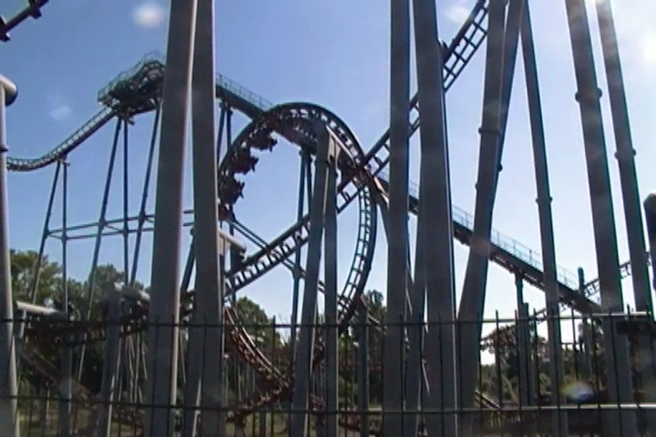
Firehawk & Nighthawk @
Kings Island & Carowinds
Mason, Ohio, U.S.A &
Charlotte, North Carolina, U.S.A
I'm lumping these two together, despite the fact that I do rank Firehawk higher than Nighthawk. But I put these together since.....they're mostly the same ride, and close enough to be lumped together. I'd rather explain their differences here in one entry than have two entries to give mostly the same praise while emphasizing their differences and excluding Green Lantern. And....these Vekoma Flying Dutchman are really fun rides. I know people usually will argue that the B&M Flyers are better than the Vekoma Flyers. Well....at least that was the case. Nowadays, it's more of a debate since Vekoma came out with F.L.Y at Phantasialand (I desperately need to get back to that park. Next time I'm in Germany). But B&M has some great fliers (Flying Dinosaur is SO GOOD). But in a one-on-one match between the Vekoma Flying Dutchmen and the Superman: Ultimate Flight clones, these clearly win. They just have a more intense layout with more forces and just a ton of fun elements. Such as a cool overbank, a badass vertical loop, fun helixes, and many lie to fly elements. I know people bitched about these rides, calling them rough, and hence, they landed a spot on our Top 10 Underrated Coasters List. And....yeah. I'm not gonna lie. Nighthawk was kind of rough. That ride definately had a rattle. The corkscrews definately were clunky, and.....you can clearly see why Vekoma modified the later versions on Firehawk and Batwing to have the inline twists instead. With Nighthawk, I totally see where people were coming from. But Firehawk was smooth as glass. Same goes for Batwing. I STRONGLY urge you to get on Batwing. And get on it soon, cause this the last year for Six Flags America, and soon Batwing will be lumped into here as well (SFA's closure will DRASTICLY reshape this Top 10 List).
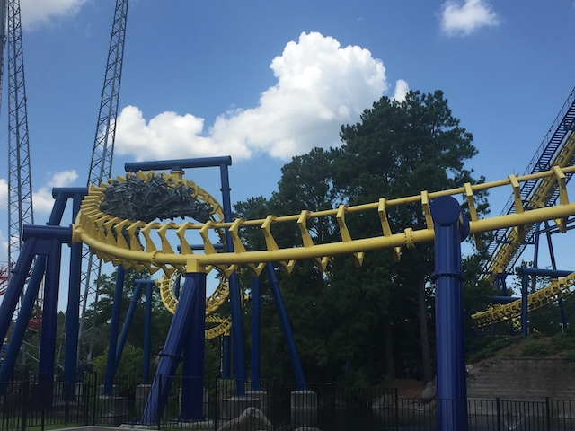 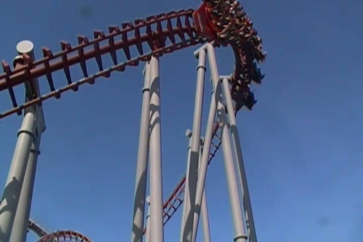
#6.
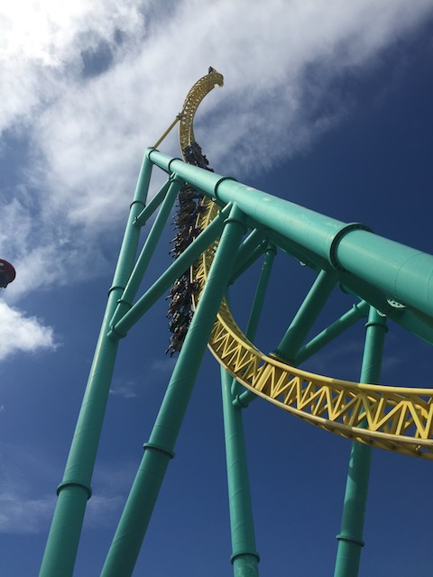
Wicked Twister @
Cedar Point
Sandusky, Ohio, U.S.A
This is a particuarly sad one. I'm a fan of the Intamin Impulse coasters, and as of now, the one of the only ones that has ever been demolished, is also one of the biggest and best one that was ever built. Wicked Twister at Cedar Point. This was the only Impulse coaster with two spiral spikes, and also was the biggest impulse coaster ever built. And....yeah. It was a ton of fun. Sure, the impulse coasters aren't exactly the most complicated rides out there. But it's just a ton of fun. Partidcuarly the fact that it gets stronger and faster the more the ride goes on. Yeah. It starts out fun, but it's the 2nd round where it gains its top speed and goes to the top of the spike that's the most fun. And going up the backwards spike while spiraling up is a real freaky feeling. Honestly, I only wish I managed to ride it in the front seat (at least I rode Voodoo @ Dorney Park in the front seat, so I've at least done AN impulse coaster in the front seat). And in some good news, a near clone of Wicked Twister has been built. The same basic ride, just even bigger has been built in China. So you can go ride that. Or at the very least, one of the other Impulse coasters. I just really wish I managed to ride Wicked Twister on my last visit (just months before it closed). Deeply regret that. Stupid ride breaking down while in line. =(
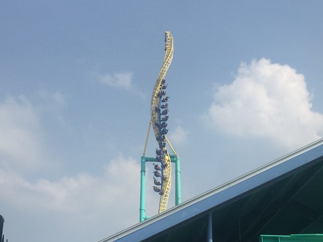 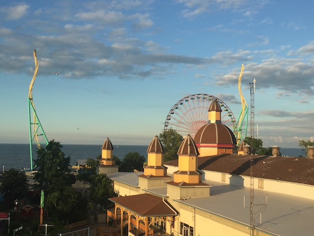
#5.
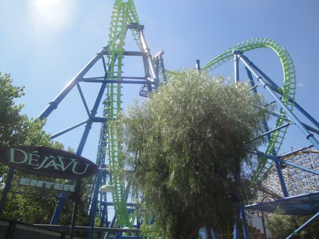
DejaVu @
Six Flags Magic Mountain
Valencia, California, U.S.A
Wait. Really? This is one of the best defunct coasters? A freaking Boomerang? Well, this isn't just a Boomerang. This is one of the Giant Inverted Boomerangs that Vekoma did. But are they really that much better than regular Boomerangs? And the answer to that is YES!!! ABSOLUTELY!!! Hell, just the regular Invertigo Boomerangs alone are a big improvement from your stand-alone Boomerangs (and that isn't even getting into the fact that the smooth ones are still fun rides). But the giant inverted ones? HOLY CRAP!!! These things are a TON of fun. So much so that it even got a freaking funeral update for its departure at SFMM. First off, the sheer size increase alone really ups the thrills on this. The faster speeds and bigger elements just really make this so much better. But the real secret that made this ride so special was the vertical spikes. Not only for the kickass vertical drop included, but the coolest lifthill ever, and the only coaster where the lifthill was a genuinely thrilling part of the ride. Now I know some people may be pissed about this rides inclusion in particular since it didn't just leave Six Flags Magic Mountain. It actually was moved to Six Flags New England, and given a new home there as Goliath. And....they added new trains to the ride which apparently BUTCHERED the ride and made it so f*cking terrible, with people arguing that that iteration would be worthy of adding to the Top 10 Worst Coasters List, and being as rough as rides like Dragon and Gouderix. Now I never got a chance to ride it like this, and it has since been removed from SFNE and turned into scrap metal, making it qualify for this list since....relocated coasters don't count (but if a coaster is relocated, but then dies at the new home, then it counts). So I'm only ranking the ride as it was when it was DejaVu @ SFMM. Now for some good news, DejaVu wasn't the only Giant Inverted Boomerang. Another one still lives on at Silverwood as Aftershock (so happy that it runs so well there). There are also clones that live on in Spain and Russia (very sad to learn that the Chinese one closed earlier this year). So yeah. Definately be sure to check one of those clones out.
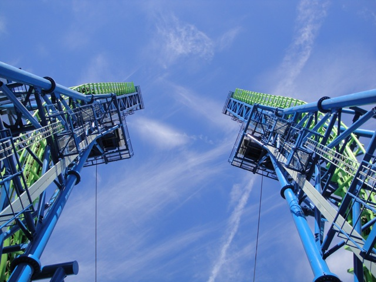 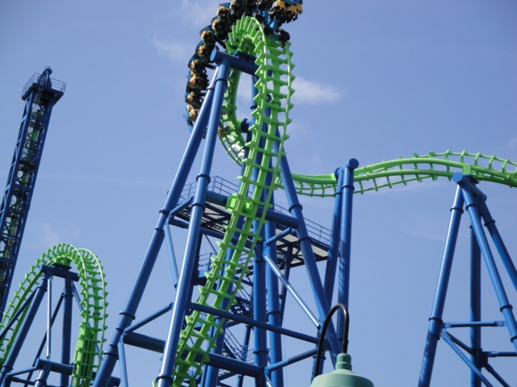
#4.
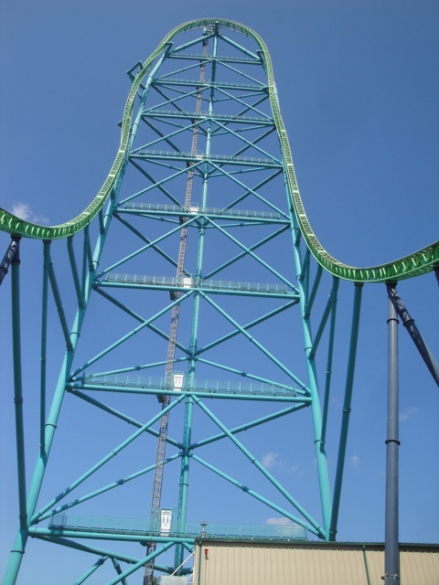
Kingda Ka @
Six Flags Great Adventure
Jackson, New Jersey, U.S.A
Now, I know I called this ride overrated, and even listed it as an example of something that would make a hypothetical Top 10 Overrated Coasters List (that's not gonna happen since.....I generally try and make the lists positive, with the Top 10 Worst Coasters being my only negative list, and I'm planning on keeping it that way). However, first of all, overrated ≠ bad. Every single coaster that I listed as a candidate for a hypothetical overrated list is still very fun, just not as fun as other people made it out to be. On top of that, while it certainly was overrated by the travel channel people and the people who hyped it up simply for being the tallest coaster in the world and 2nd fastest (fastest up until Formula Rossa, which I REALLy want to ride). There was another group of enthusiasts who hated it, calling it a rough one-trick pony, complaining about it being rough, having OTSRs, being short, and only about the launch and tower, and being inferior to Top Thrill Dragster. Now most of these people immedietly flipped on a dime, and forgot about their trash-talking of the ride and began praising it after Cedar Flags SPONTANEOUSLY announced that they were tearing it down in what is honest to god, THE WORST HANDLING OF ANY ROLLER COASTER CLOSURE IN F*CKING ALL OF THEME PARK HISTORY!!! I'M SERIOUS!!! I know Cedar Flags defenders who so desperately try and spin the merger of Six Flags and Cedar Fair (which has so far, gone HORRIBLY, and parks from BOTH CHAINS have suffered because of this) will argue that they just HAD to close Kingda Ka because it was such a maintenence nightmare. Yeah, I'm sure it was. And yeah. Perhaps the overall closing it decision was inevitable. But to quietly close it WITHOUT ANY NOTICE, THAT IS UNACCEPTABLE!!!! NOT ONLY IS IT A SLAP IN THE FACE OF ALL ENTHUSIASTS AND SPITTING IN THEIR EYE BY DENYING THEM A CHANCE TO SAY GOODBYE TO THE RIDE (Yeah. I wouldn't have flown out to get a last ride on it, since.....I'm currently too poor to do a spontaneous trip like that, but it's still a slap in the face)!!! NOT ONLY IS THAT INSULTING TO ENTHUSIASTS, BUT IT ALSO WAS HORRIBLE JUST FROM A SHEER CAPITALIST BUSINESS STANDPOINT!!! JUST THINK OF HOW MUCH ATTENDANCE AT SFGADV WOULD'VE SKYROCKETED AS YOU ANNOUNCED "LAST CHANCE TO RIDE KINGDA KA!!! GET YOUR FINAL RIDES ON IT WHILE YOU STILL CAN!!!"! HOW MUCH MONEY THEY WOULD'VE MADE FROM THAT BUSINESS!!! AND PROBABLY COULD'VE MADE SOME MONEY SELLING KINGDA KA MERCH!!! IT WAS STUPID JUST FROM A SEEKING PROFIT POINT OF VIEW!!!! LET ALONE THE INSULTING ENTHUSIASTS AND LOCALS WHO LOVED KINGDA KA!!! I mean, when Collosus @ SFMM had its final weekend, that thing got a multiple hour wait on its final days! And even during the weeks leading up to it, it got FAR LONGER LINES THAN USUAL!!! Before the closure of that ride was announced, it NEVER had a line and was FAR LESS POPULAR than Kingda Ka was. Yeah. That thing probably would've gotten a 4-5 hour wait had they given it a proper send-off! Yeah! Cedar Flags CONSTANTLY did this with SO MANY coasters that they recently closed, but.....as bad as it was to do that to so many coasters, at least those weren't amazing. Sure, two of them were also on the lower portion of this list (Green Lantern @ SFGAdv, & Nighthawk @ Carowinds), but do that already disgraceful treatment for Kingda Ka? Unfathomable. Cause yeah. I know i complained about the gimmick, but......launching to 128 mph is no joke. You REALLY feel the speed. And.....just rising up that high.....Whoa. Sure. It wasn't the best thing ever, but......it still was f*cking cool. Go check out Top Thrill 2 at Cedar Point, since....that still lives on (as a remade ride. Looking foreward to riding it in that iteration next Cedar Point visit)!
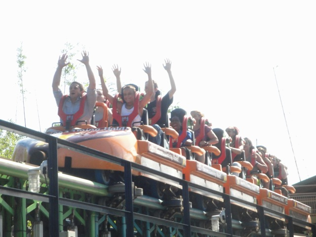 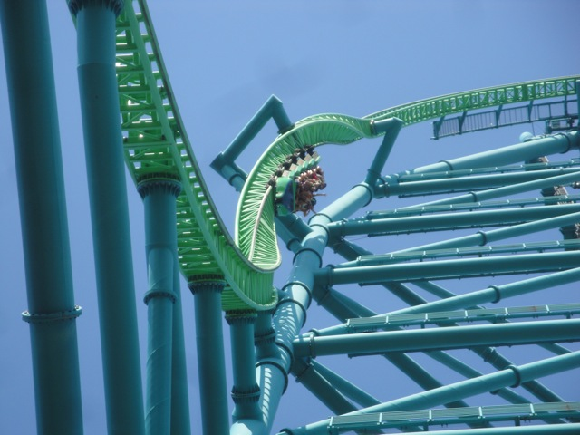
#3.
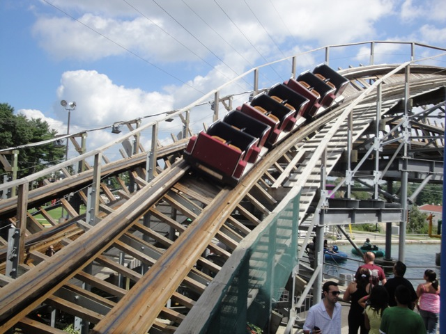
Hellcat @
Timber Falls
Wisconson Dells, Wisconson, U.S.A
Wait! Really!? This is one of the best defunct coasters!? And it beat out the tallest coaster in the world!? Oh yeah. Hellcat was GREAT!!! Hell, when we first rode it, it made our Top 10 Wooden Coasters List. Now granted, it soon fell off the list since.....we had ridden so many more amazing wooden coasters. But the sheer fact that it made the list at all (when my list was respectable. I mean, there technically was a point where freaking Grizzly @ CGA and Psyclone @ SFMM were on that list due to just how few wooden coasters I had ridden. But that doesn't count. Especially since I hadn't even ridden 10 wooden coasters at that point lol) was impressive. Yeah. This sure didn't look like it since......it was a small little wooden coaster, at a tiny local Mini Golf place, literally right down the road from a much bigger theme park with far more coasters (I may not like Mt. Olympus, but to argue that it isn't a large and proper park would be a lie). But.....NO!!! This was better than any of the coasters at Mt. Olympus (disclaimer. I haven't ridden Hades as Hades 360 with the inversion. But I've heard that the inversion did NOT help that ride). It was the best coaster in Wisconson (though that state is not a coaster hotspot in all honesty). This ride may have been small, but it was FAST!!! IT WAS MEAN!!! AND IT WAS AGGRESSIVE!!! It never slowed down, going over hills, giving constant airtime. And it had laterals. WHAM!!! BAM!!! SLAM!!! Yeah. This ride was ROUGH!!! But never so much that you couldn't enjoy it. Yeah. I could see some more sensitive enthusiasts not liking it for that reason. But this ride was AWESOME!!! Sadly, Timber Falls closed simply because.....it was too close to Mt. Olympus, and.....upkeep of these rides was just too much money. So the entire park closed, which is a real shame since it was the best coaster in Wisconson. Oh well.
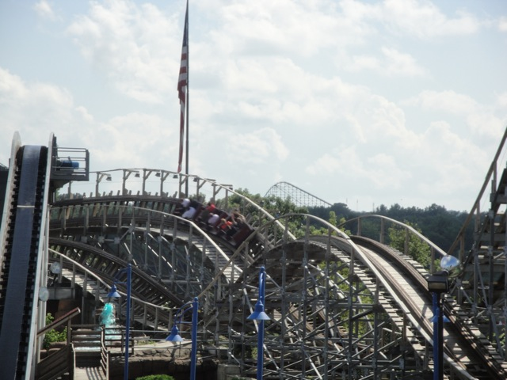 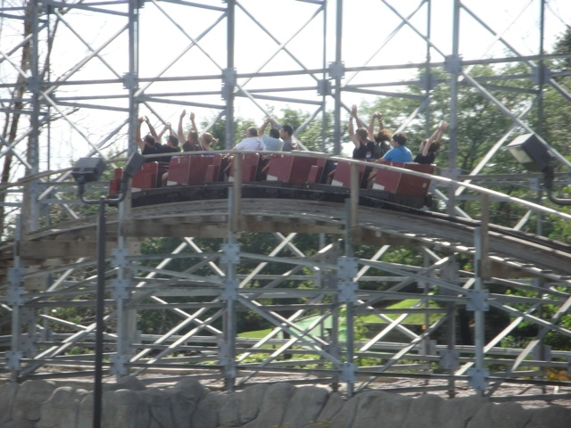
#2.
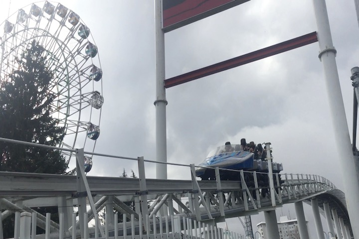
Dododonpa @
Fuji-Q Highlands
Fujiyoshida, Yamanashi, Japan
*Sigh* This one really stings. I am SUPER bummed that this ride was demolished. I know it was at Fuji-Q Highlands, which had Eejanaika, which.....one of the best steel coasters on the planet. But yeah. Fuji-Q genuinely had one of the best coaster lineups out there, between Eejanaika, this, Fujiyama, and Takabisha. *Sigh* With this gone, the coaster line-up is still pretty damn strong. But losing not only the parks silver medal coaster, but a SUPER STRONG and also unique coaster. That just f*cking STINGS!!! Cause to say that this ride was great, is understatement. First of all, it had BY FAR the strongest launch out of ANY coaster I've ridden. No seriously! This thing was like a car accident in reverse, only accelerating that quickly instead of decelerating that quickly! It GENUINELY takes your breath away. It then was a super fun ride, bouncing along at super high speeds throughn a huge turn before going into a giant vertical loop, which.....yeah. That gave a TON of hangtime. I know it originally had a Top Hat here, with airtime so strong that it hurt. Yeah. I'm torn on whether I'm sad I missed that, or not due to the pain rumors. Yeah. This ride TRULY was something special. And the worst part, there's no coaster similar to it. So there's no close alternative for me to praise. But.....at least I got to ride it at all. I'm just grateful I got on it, as a dude from California, and that it gets to be on this list at all, instead of being in the unofficial list of defunct coasters I wish I got to ride.
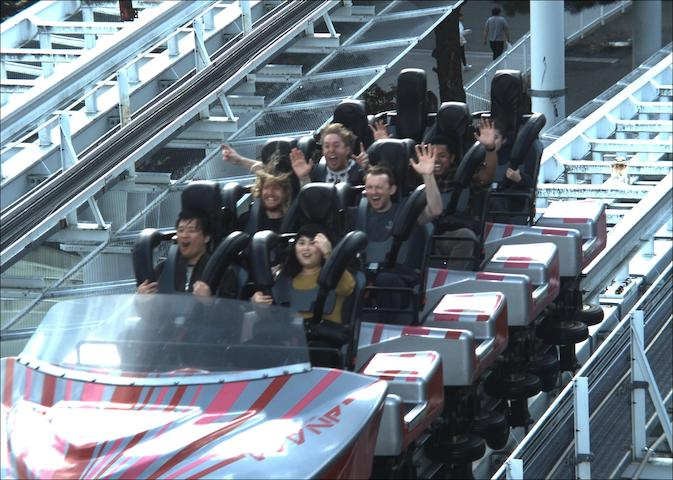 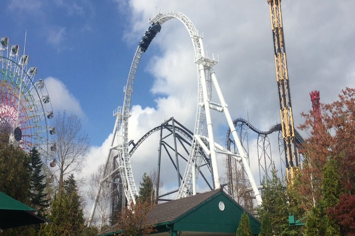
e
#1.

Dueling Dragons @
Universal Orlando Resort
Orlando, Florida, U.S.A
OK. This should come as no surprise. It's honestly, by far, the defunct coaster I've talked about the most and the one who's removal I have complained about the most. I mean, the reviews for both coasters contain a giant rant/essay about why their removal was such a bad idea and how I dissaproved of it in what is honestly, the most controversial thing I've ever posted to Incrediblecoasters. Now granted, they have since replaced Dragons with Hagrids Motorbikes as the official replacement, and while that doesn't look as good, they also added Velocicoaster as well as Stardust Racers at the brand new Epic Universe park, which feel like unofficial replacements that ACTUALLY fill the gap that Dragons had in the park, even if they're not meant to be the official replacement (looking foreward to finally riding all those rides next week). As for Dragons, this was truly something special. This wasn't just a classic custom unique strong old-school B&M Invert, this was TWO of them. And unlike most racing/dueling coasters, this was one of the few that I genuinely counted as 2 seperate credits cause.....these were just too damn different to be thought of as the same ride. And....its the dueling and the other side that truly made these rides stand out. If both coasters were built as two individual coasters without the dueling aspect, they would still be awesome. But neither would be taking the #1 spot. Dododonpa would be #1, with Fire Dragon at #2, and Ice Dragon at #4, between Kingda Ka and Hellcat. Both great, but....the near misses and all the cool elements is what made this ride so special and so unique. This ride was beloved, and truly something special. Universal has made tons of cool new coasters to try and make up for this (and I'm looking foreward to getting on them). Go check those coasters out, or some other old school B&M Inverts. Dueling Dragons. Still missed to this day. =(
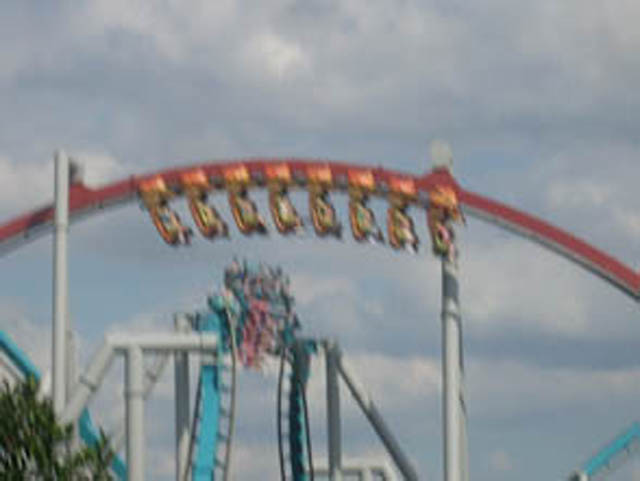 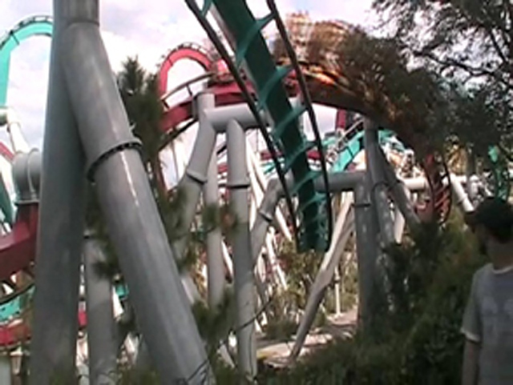
So now I'm sure you know what you're thinking. "Wow. That was the list. That is so wrong." Well no. This is just the current list. I haven't been on every coaster in the world, so until I do, this list is innacurate for a world wide description. But on top of that, there are defunct coasters that I never got to ride, and have been demolished, meaning that unless time travel is invented, I will NEVER get a chance to ride those coasters, and therefor, critique them. Sure, someone could hypothetically build a clone of them. Though out of all the coasters I listed in that hypothetical Top 10 List of Defunct Coasters I wish I rode, I don't expect any clones of any of those rides to be built. Honestly, same goes for the coasters on this list (please prove me wrong and build a Dueling Dragons clone! I promise I will make whatever park you are a priority if you do that!). And honestly, part of me hopes that this list never grows, cause that means several more awesome coasters will sadly be torn down. And I don't want to see that. But on the other hand, something even worse could happen. These awesome coasters could be torn down before I get to ride then, meaning not only can I never ride them, but they can't even be appreciated here cause I never got a chance to experience them. And sadly, thanks to the state of the world, I sadly am predicting a TON more great coasters getting demolished. This list alone is already set to be outdated next year, with an update already planned once Six Flags America closes and its final season is over. That alone is gonna change this list. And that makes me sad.
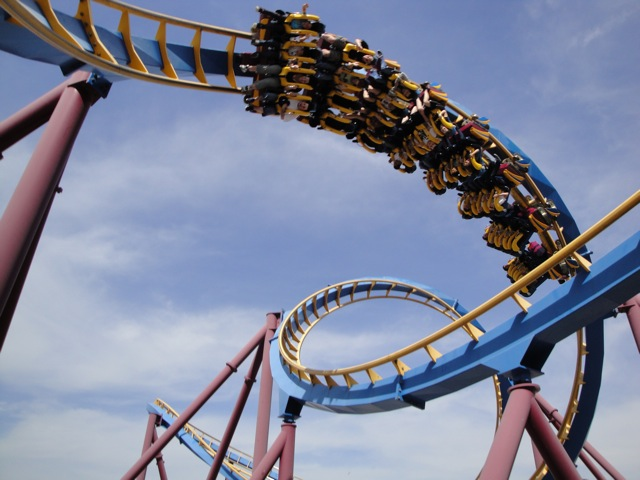 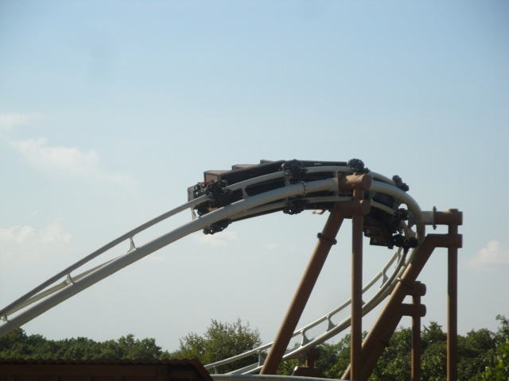
|